A1 · M.Tech final-year project · Ongoing
AgroSense ARIA
An offline-capable AI farming platform: a self-healing LoRa mesh of ESP32-S3 sensor nodes on a custom 4-layer PCB, reporting to a Raspberry Pi hub that runs seven on-device ML models and a three-tier LLM assistant — with no internet connection required.
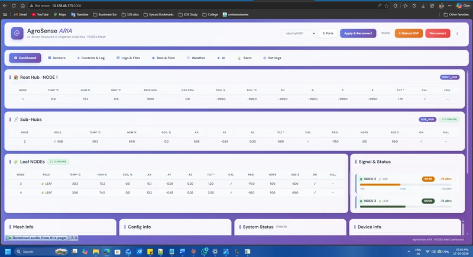
What it is
ARIA is my M.Tech final-year project: an AI farming platform that works without an internet connection. A LoRa mesh of ESP32-S3 sensor nodes reports to a Raspberry Pi hub, and everything — sensing, inference, irrigation decisions, and the assistant a farmer talks to — happens on hardware sitting in the field.
The nodes run on the AgroSense board line I designed alongside it. Revision 3 is the current hardware.
The mesh
Nodes take one of three roles — root hub, sub-hub or leaf — and the network scales from 2 to 100 of them. A leaf can be promoted to a sub-hub when the topology needs it, so losing one node doesn't split the network.
Airtime is divided by TDMA scheduling so a hundred nodes on one frequency don't collide, with an RTC-driven time-sync cascade keeping their slots aligned. I wrote about 7,260 lines of ESP32-S3 firmware for this, AES-128 on the link, with the nodes deep-sleeping between scheduled readings — that's what takes battery life into years.
What runs on the hub
Seven models on the Raspberry Pi, all offline: disease detection, irrigation scheduling, fertiliser planning, yield prediction, crop recommendation, anomaly detection over the sensor stream, and an ensemble that reconciles them into one plan.
The farmer-facing assistant is a three-tier cascade — cloud when there's signal, a local model when there isn't — with speech in and out in English, Hindi and Telugu.
Pump control
Irrigation automation sits behind a four-level autonomy controller, from advisory through to acting on its own. Every action is logged and any automated one has a 60-second undo. Irrigation mistakes are expensive and slow to reverse.
Gallery
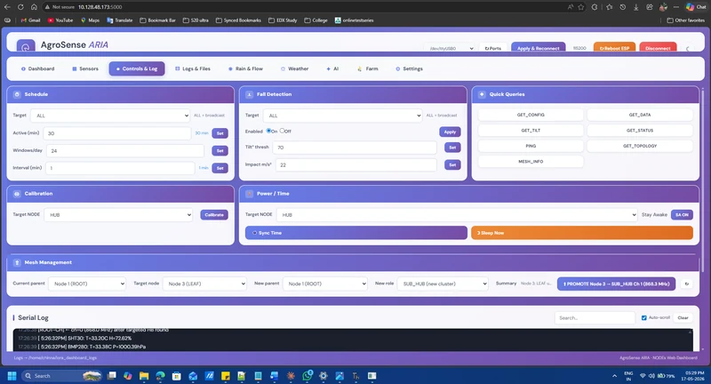
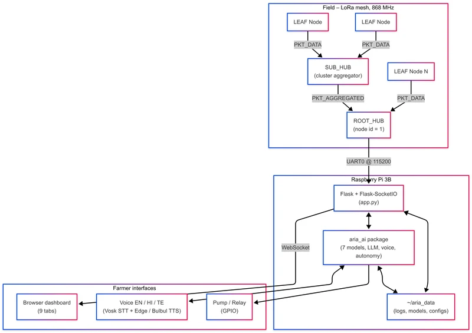
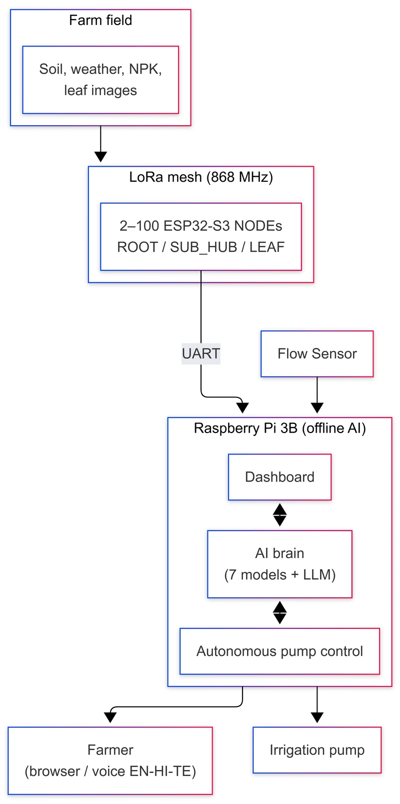


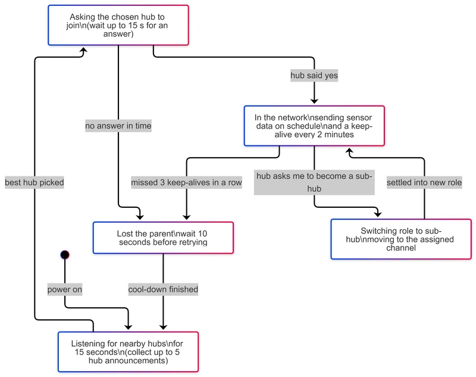
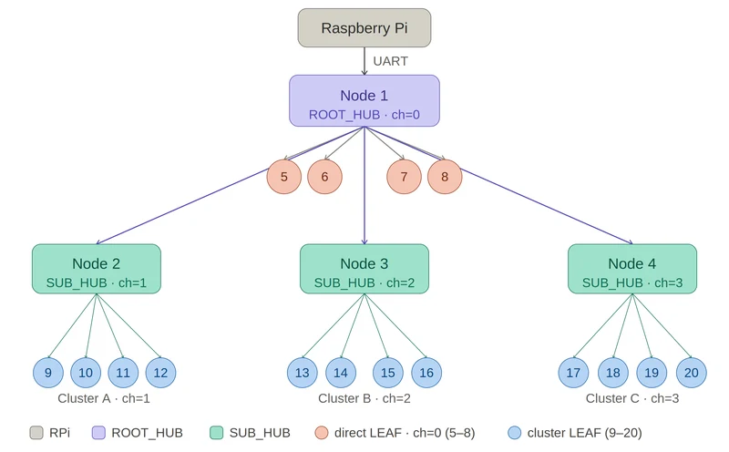
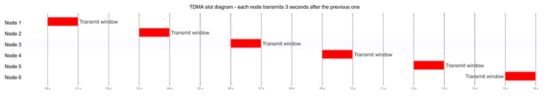
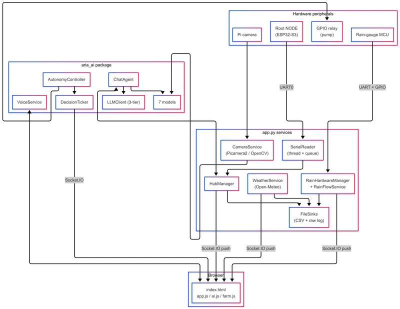
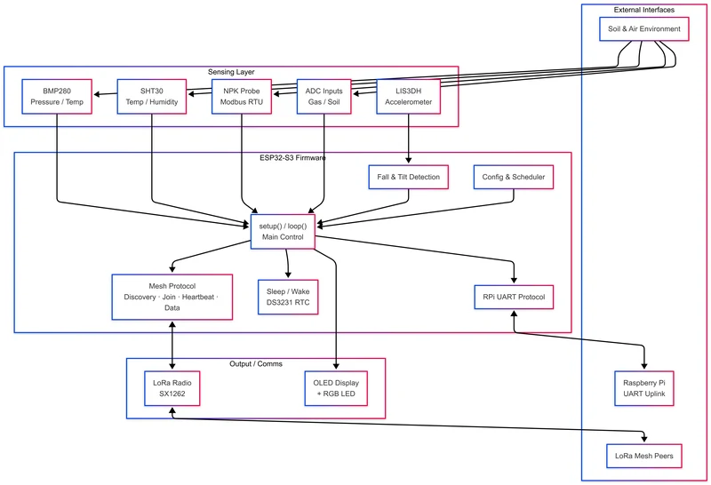
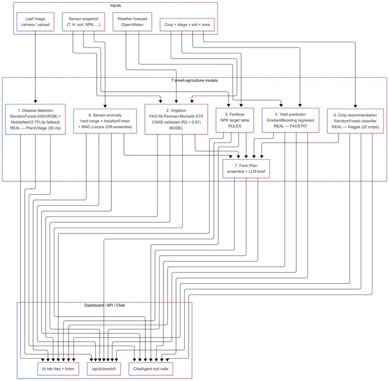
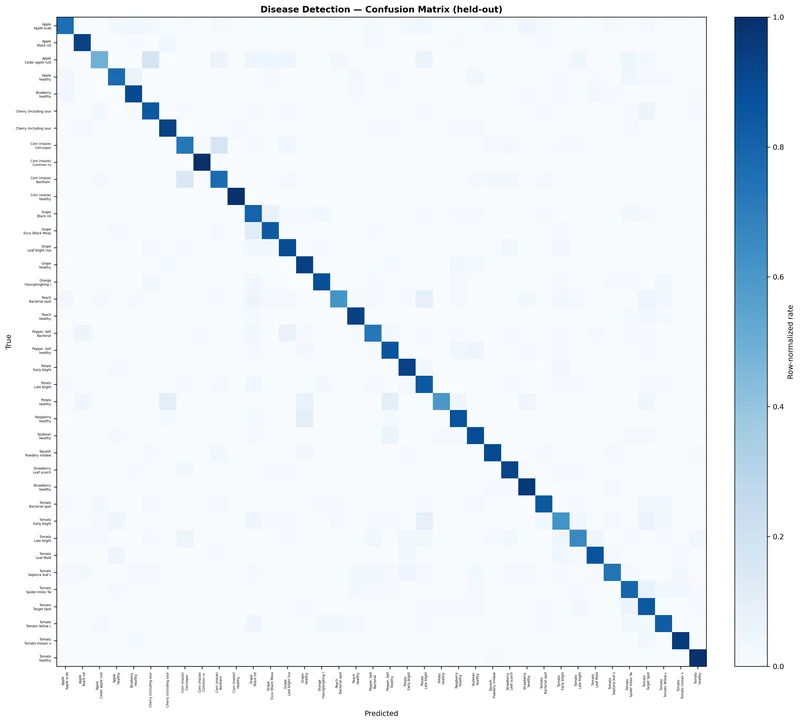
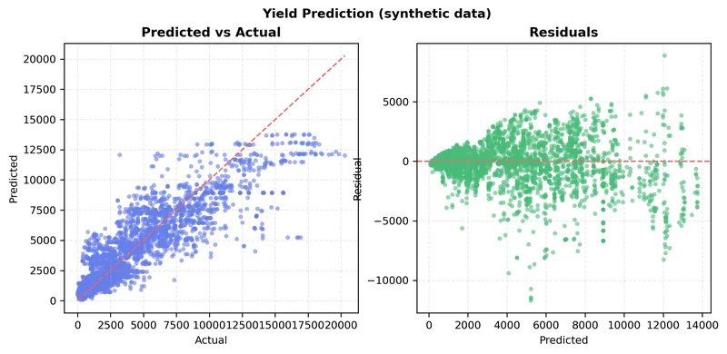
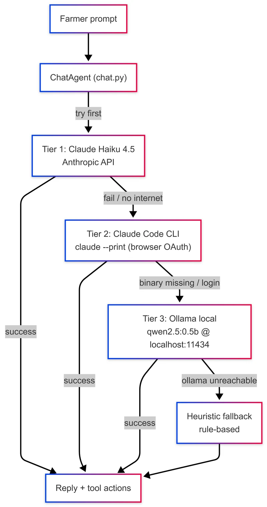
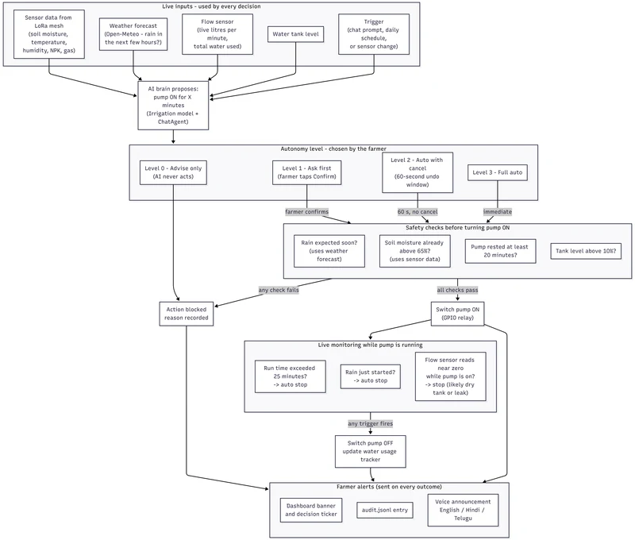
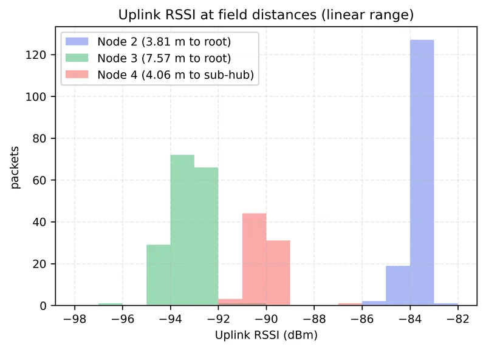
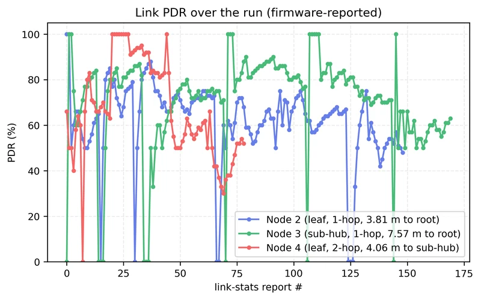
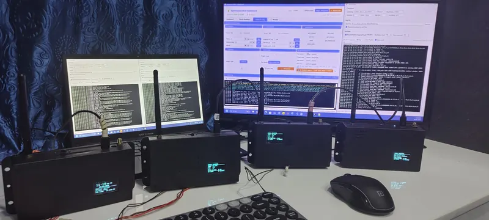
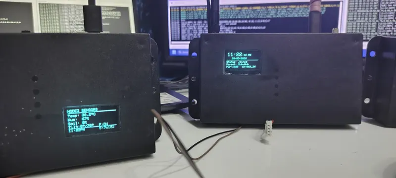
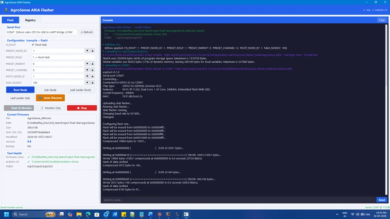